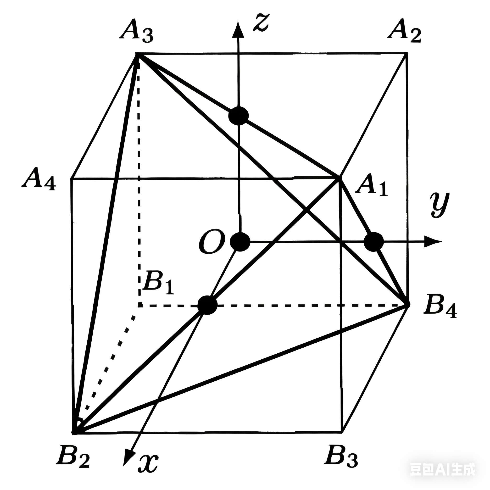
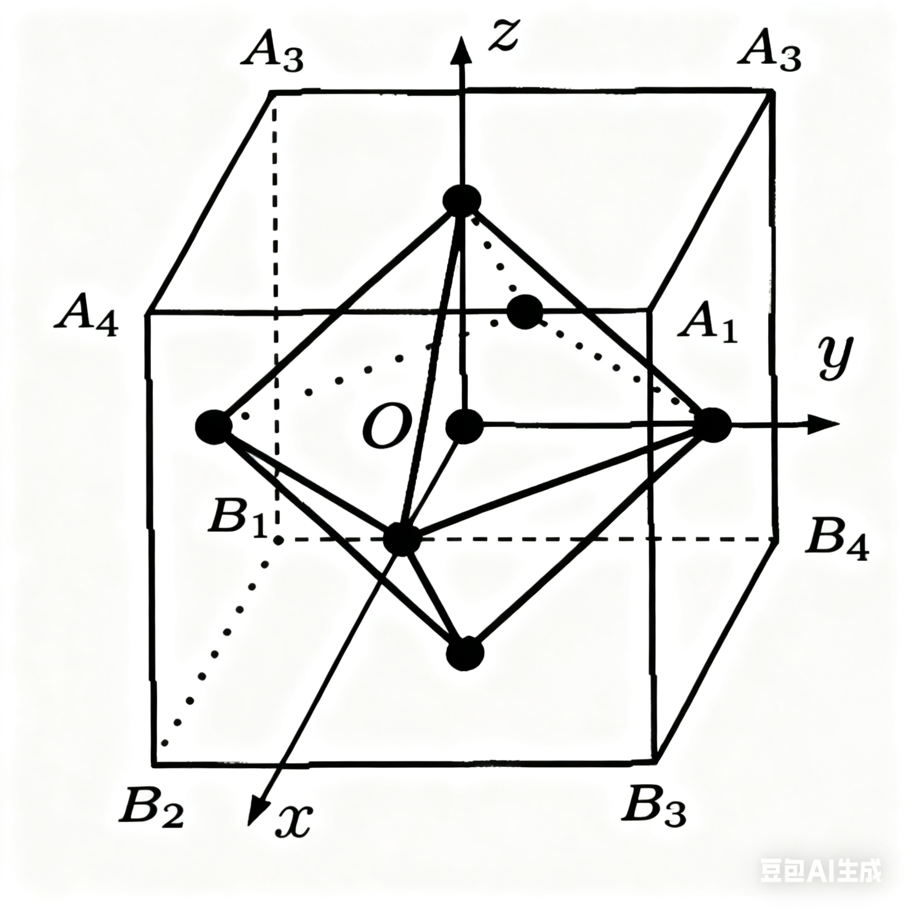
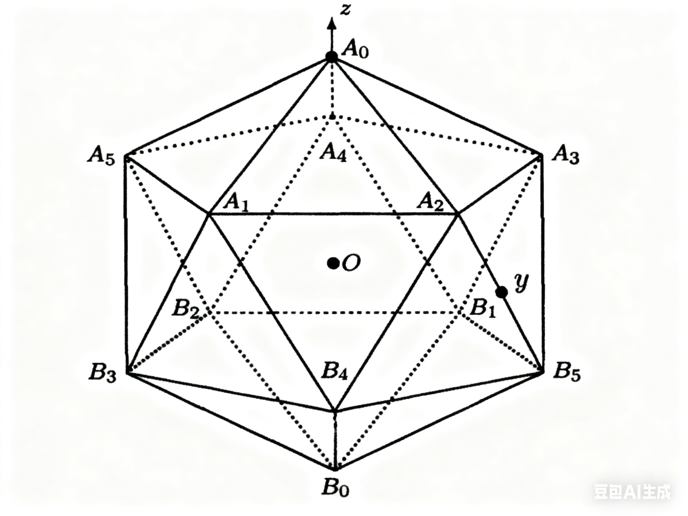

点群简介
前言
由于这部分知识在本人的研究方向应用较少，加之时间有限，所以只是非常粗略地整理了一下。此外，本文的图片都是豆包AI生成，内容主要参考黄飞老师的PPT。
正多面体的固有对称变换群
正多面体
- 定义：各个面都是全等的正多边形且各个多面角都相同的多面体 .
- 可以证明只存在正四、六、八、十二、二十面体 .
- 正 $N$ 面体的侧面是 $N$ 个全等的正多边形 .
- 对偶正多面体
- 正四面体 $\leftrightarrow$ 正四面体，自对偶;
- 正六面体 $\leftrightarrow$ 正八面体；
- 正十二面体 $\leftrightarrow$ 正二十面体.
$T$ 群
正四面体为自对偶正多面体，其对称变换群为 $T$ 群 .
如图所示，正四面体对称变换 $\to$ 正六面体对称变换（正六面体对称变换不一定是正四面体对称变换）
- $T_{x}^2, T_{y}^2, T_{z}^2$表示绕 $x,y,z$ 轴转动$\pi$;
- $R_j,; j=1,2,3,4$，分别表示$A_{1},B_{2},A_{3},B_{4}$为正方向的体对角线转动 $2\pi /3$ .
$T$ 群的性质
- 12阶：$3+8+1$ ，其中 $1$ 为恒元；
- $3$ 个二次轴 $(T_{i})$，$OX,OZ,OY$ ;
- $4$ 个三次轴 $(R_{j})$， 正方体体对角线，三次轴不是双向轴.
- 群的秩为 $2$ ，生成元可以为 ${T_{x}^2,R_{1}}$；
- 子群： $$ \begin{align} &\{E,T_{i}^2\}~,\quad \{E,R_{j}, R_{j}^2\}~, \\ &\{E,T_{x}^2,T_{y}^2,T_{z}^2\}\; \to \text{不变子群} ~. \end{align} $$
$O$ 群
立方体与正八面体互为对偶正多面体，它们有相同的对换变换群$O$ 群 .
- $T_{x}, T_{y}, T_{z}$表示绕 $x,y,z$ 轴转动$\pi / 2$ ;
- $R_j,; j=1,2,3,4$，分别表示$A_{1},B_{2},A_{3},B_{4}$为正方向的体对角线转动 $2\pi /3$ ;
- $S_{k},; k=1,\dots,6$，分别表示绕 $6$ 对立方体相对楞中点的连线（二次轴）转动 $\pi$，比如 $S_{1}$可以表示绕 $A_{3}B_{1}$中点与$A_{1}B_{3}$中点连线转动 $\pi$ .
$O$群的性质
- $24$ 阶：$3\times {3}+4 \times 2 + 6 +1$，其中 $1$ 为恒元；
- $3 \times 3$：$3$ 个双向四次轴 $T_{i}$ ；
- $4 \times 2$：$4$ 个双向二次轴 $S_{j}$ ；
- $6 \times 1$：$6$ 个二次轴；
- 秩为 $2$ ，生成元可以为 ${R_{x},R_{1}}$ .
- 子群
- 类
$Y$ 群
正二十面体和正十二面体互为对偶多面体，有相同的固有对称变换群 $Y$ 群 .
$Y$ 群的性质
- $60$ 阶，$6\times 4 + 10 \times 2 + 15 +1$；
- $6 \times 4$： $6$ 个五次轴，正二十面体的$6$个相对顶点连线；
- $10 \times 2$：$10$ 个三次轴，两个相对侧面中心的连线$A_{0}\to B_{3}\to B_{5},A_{1}\to B_{4}\to A_{2}$ ；
- $15\times 1$：正二十面体相对棱中点的连线$A_{0}\to B_{4}$；
- 类（会分析即可）：恒元自成一类，绕 $6$ 个五次轴正、逆转$\frac{2\pi}{5}$是一类，正、逆转$\frac{4\pi}{5}$是一类（顶点可以互换，且自逆类）；绕 $10$ 个三次轴的 $20$ 个元素是一类；绕 $15$ 个二次轴转动的 $15$ 个元素是一类 .
- 无非平庸不变子群 .
固有点群
- 点群：保持一个点（所有对称轴的交点）位置不变的对称操作构成的群 .
- 固有转动：$3-$dim 空间中的纯转动 （不改变手性）.
- 非固有转动：固有转动 $+$ 空间反演 （改变手性）.
- 固有点群：由固有转动的集合构成的点群，为 $SO(3)$ 的有限子群；
- 一共有五种，$C_{n},D_{n},T,O,Y$ .
- 非固有点群：由固有转动和非固有转动的集合构成的点群，为$O(3)$的子群 .
- $I$ 型非固有点群 : 含空间反演 $I$ ，$G = H \cup I H = H\otimes V_{2}$，其中$H$为（五种）固有点群之一 .
- $P$ 型非固有点群，不含空间反演 $I$ ，由固有点群 $G$ 指数为 $2$ 的不变子群 $H \cup IAH$ 构成，其中 $AH$ 为不变子群的陪集，即 $A \in G, A\notin H$ .